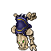
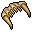
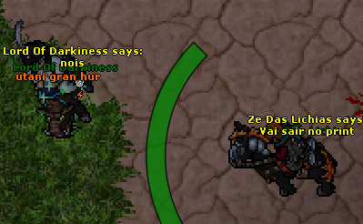

Undead Cavebear
Para pegar o "Undead Cavebear" você precisa do "Maxilla Maximus", Que é um item da task de "Undeads", Essa montária é de uma invasão na quarta-feria as 19:00 em "/ir bonebeast1" no sudeste
Agradecimentos, o site oficial diz ser em dol mas não é 😪, pedir ajuda no server e o pessoal sempre ajudando.
Em breve estarei colocando a task de Undeads para ajudar😁👌
Home